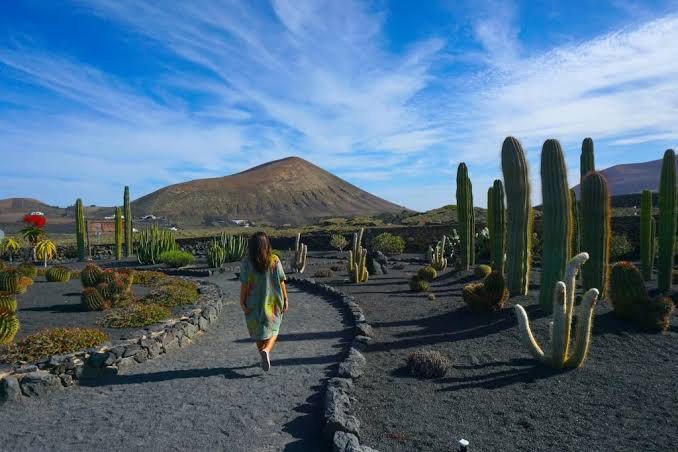
Royal Marina Concierge Guide
Beaches · Experiences · Dining
Discover some of Lanzarote's most memorable experiences, beaches and dining destinations, carefully selected to help you enjoy the island with ease.
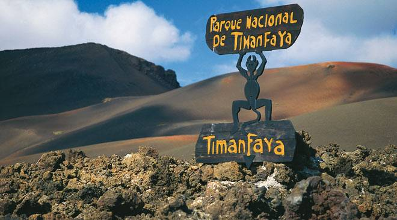
Lanzarote's most iconic volcanic landscape, known for its dramatic lava fields and unique geothermal scenery.
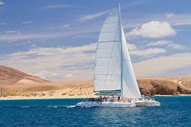
A premium catamaran experience along the coast, ideal for swimming, sailing and enjoying the Atlantic.
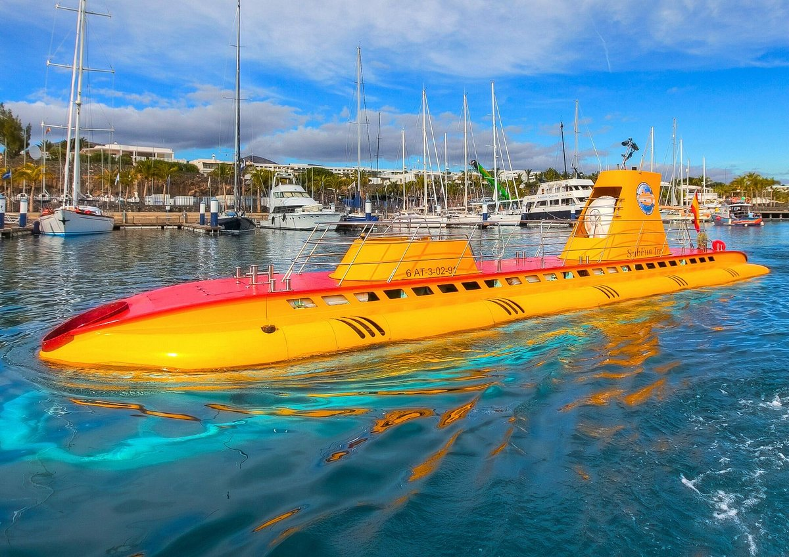
A unique underwater experience from Puerto Calero, perfect for discovering Lanzarote's marine world.
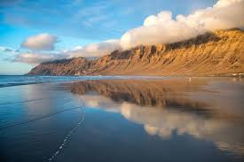
A dramatic beach surrounded by cliffs, especially loved by surfers, photographers and sunset seekers.
Open in Google Maps →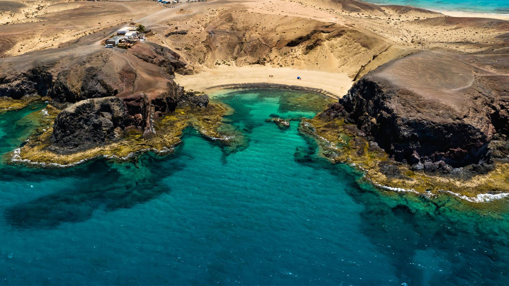
Golden sand, turquoise water and protected surroundings. One of Lanzarote's most beautiful beach areas.
Open in Google Maps →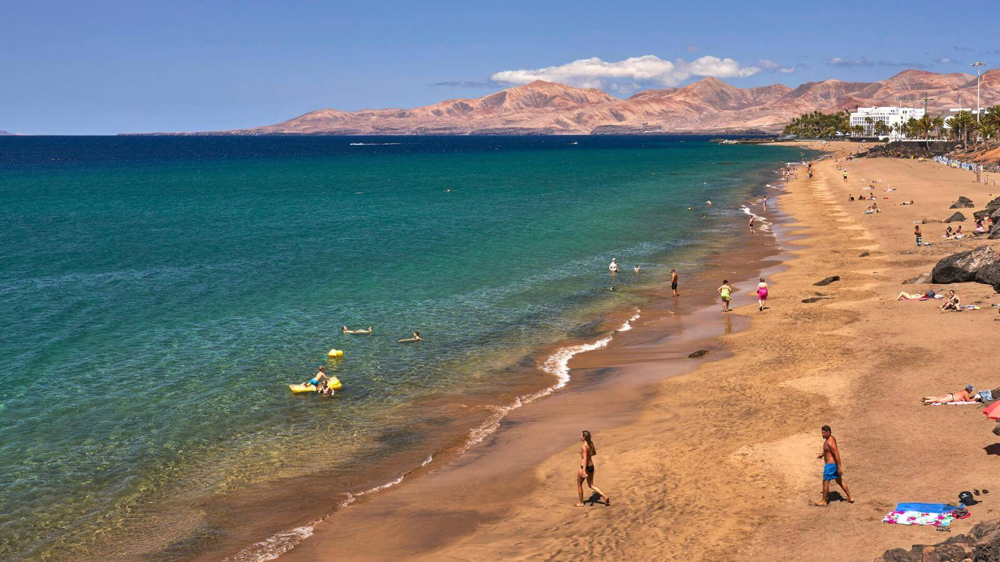
A lively coastal area with beaches, shops, restaurants and a beautiful seaside promenade.
Open in Google Maps →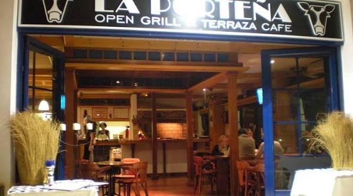
An Argentinian and Uruguayan restaurant in Puerto Calero, renowned for its premium grilled meats, excellent wines and beautiful marina setting.
An authentic Mexican restaurant overlooking Puerto Calero Marina, offering traditional flavours, vibrant dishes and a welcoming atmosphere.
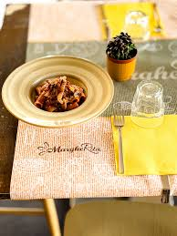
A relaxed waterfront restaurant serving Mediterranean cuisine, fresh fish, tapas and local specialties in the heart of Puerto Calero Marina.
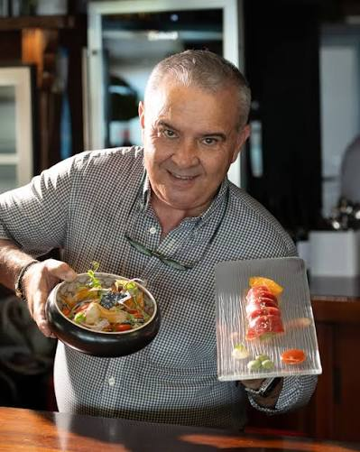
Located in Playa Blanca, around 25 minutes from the hotel, Brisa Marina is one of Lanzarote's most renowned seafood restaurants, celebrated for its fresh fish, shellfish and spectacular seafront views.
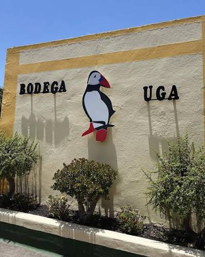
Situated in the picturesque village of Uga, approximately 15 minutes from the hotel, this elegant restaurant showcases the finest local produce and traditional Canarian cuisine in a refined countryside setting.
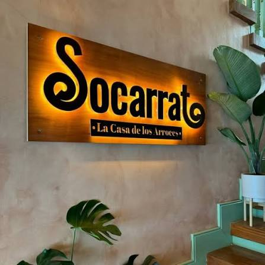
Located in Playa Blanca, around 25 minutes from the hotel, Socarrat •La Casa de los Arroces• is a celebrated restaurant dedicated to exceptional rice dishes, traditional Spanish arroces and a warm, welcoming dining experience.
For restaurant reservations, island excursions, boat trips or transport arrangements, please contact reception or press 9 from your room.